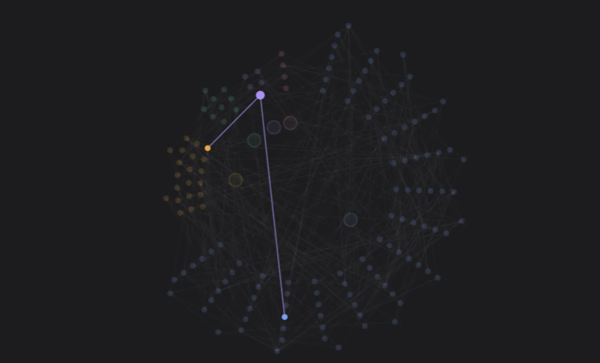
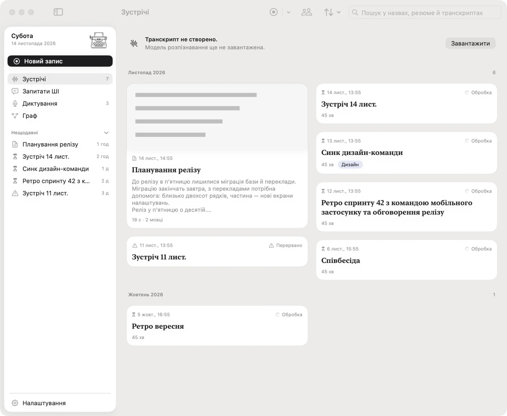
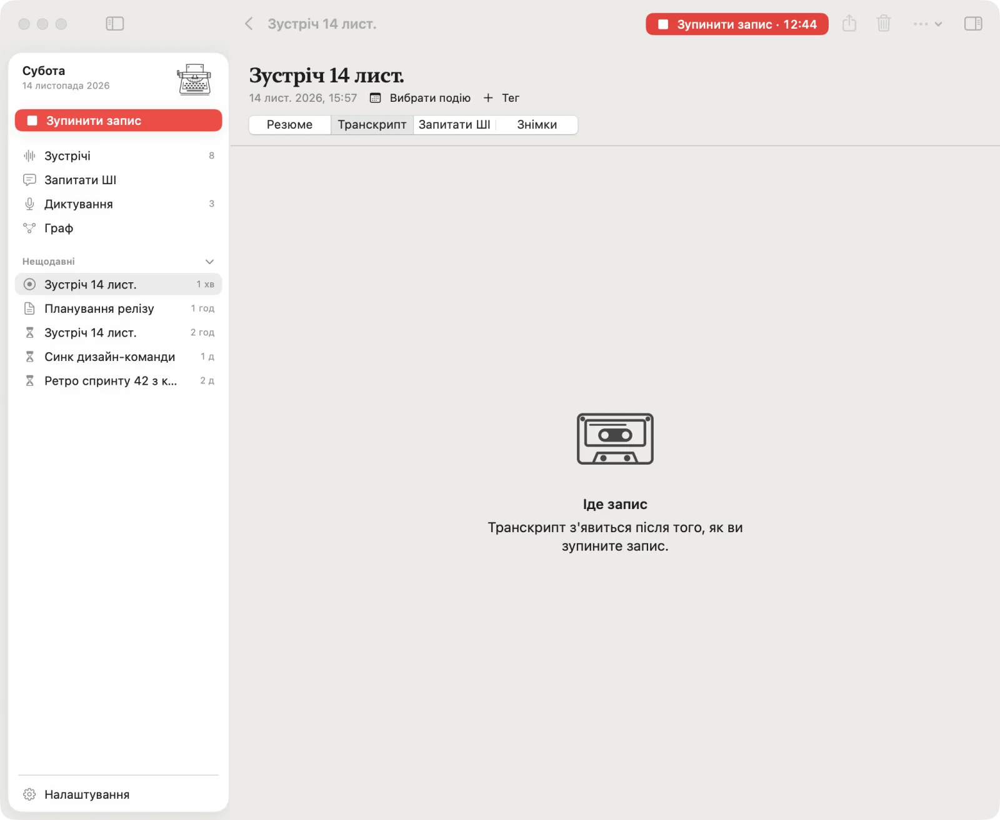
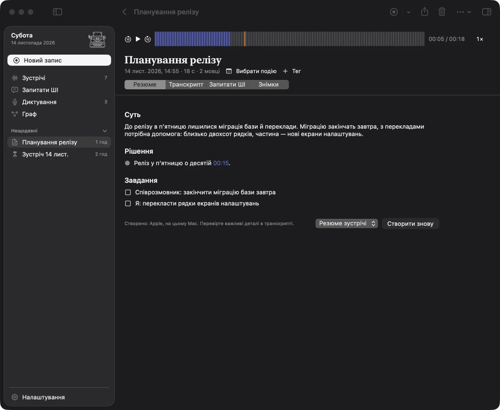
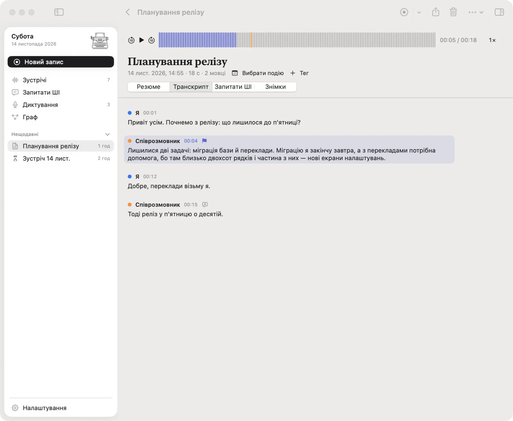
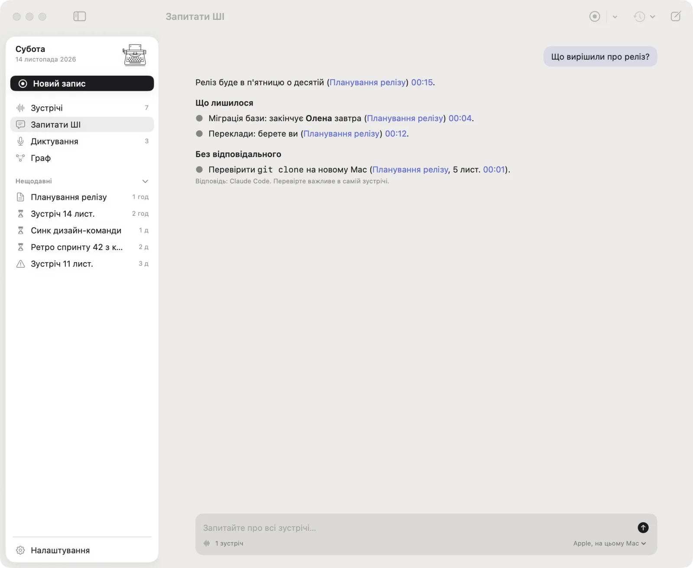
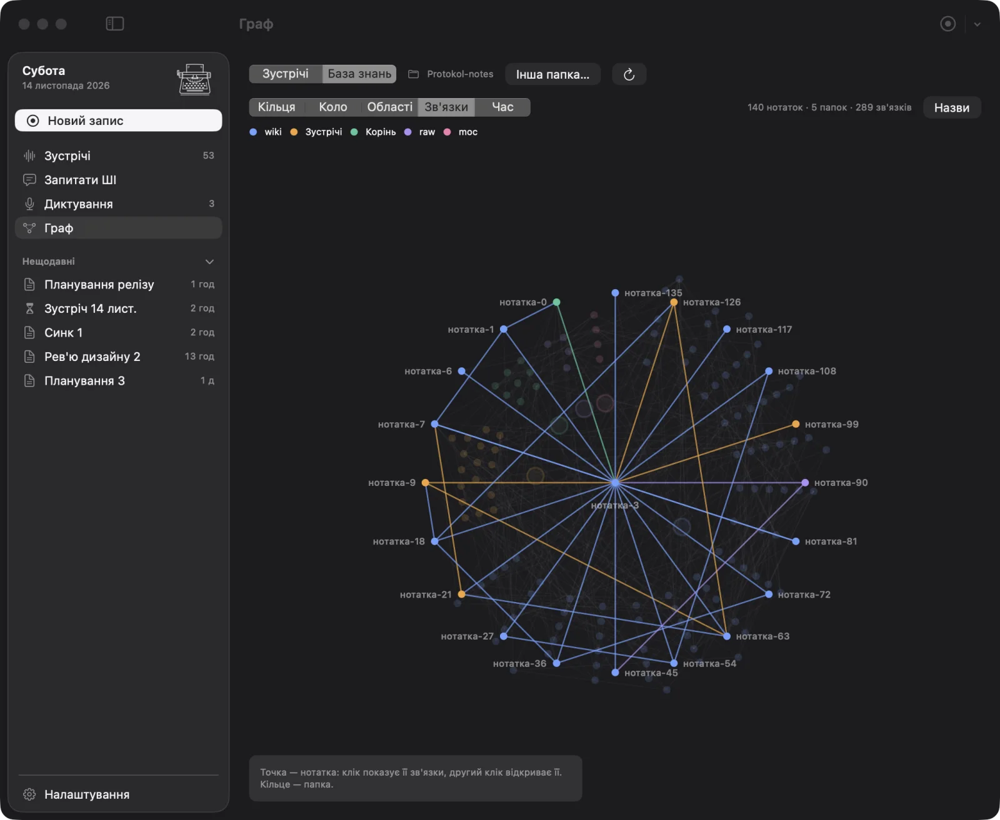

Pysar — an AI meeting memory that shows its sources.Писар — пам’ять зустрічей на основі ШІ, яка показує свої джерела.
A native macOS app I designed and built: it records meetings, transcribes them on the device, summarises them and answers questions about everything that was said — with a link to the exact moment behind every claim. AI agents can read the same data through an MCP server and a command-line tool.Нативний застосунок для macOS, який я спроєктував і створив. Він записує зустрічі, розпізнає їх на пристрої, складає резюме й відповідає на запитання про все, що прозвучало, — з посиланням на точний момент за кожним твердженням. ШІ-агенти читають ті самі дані через MCP-сервер і інструмент командного рядка.

The problem: what was decided, and who said it?Проблема: що вирішили і хто це сказав?
I spend a large part of the week in meetings. Decisions and promises are made there and then lost: nobody rereads a recording, and notes written from memory are wrong in the details that matter.Значну частину тижня я проводжу на зустрічах. Там ухвалюють рішення й дають обіцянки, а потім їх гублять: ніхто не переслуховує запис, а нотатки з пам’яті хибні саме в тих деталях, які важливі.
I wanted a tool that answers a plain question — “what did we decide about the release?” — and lets me check the answer in seconds. It also had to keep recordings of work meetings on my own machine. The tool I used before did not fit the way I work, so I built my own.Я хотів інструмент, який відповідає на просте запитання — «що ми вирішили щодо релізу?» — і дає перевірити відповідь за секунди. Він також мав зберігати записи робочих зустрічей на моєму комп’ютері. Інструмент, яким я користувався раніше, не відповідав моєму способу роботи, тож я створив власний.
What it does.Що він робить.
- Records the meetingЗаписує зустрічMicrophone and system sound as separate tracks. It notices a call in Teams, Zoom, Slack, Webex, FaceTime, Discord or a browser and offers to record it.Мікрофон і системний звук — окремими доріжками. Писар помічає дзвінок у Teams, Zoom, Slack, Webex, FaceTime, Discord або браузері й пропонує його записати.
- Transcribes on the deviceРозпізнає на пристроїSpeech recognition and speaker separation run locally. No audio leaves the Mac.Розпізнавання мовлення й розділення мовців працюють локально. Жоден звук не залишає Mac.
- SummarisesСкладає резюмеWith a local model or with Claude — the user chooses. Every point in a summary links to its moment in the recording.Локальною моделлю або через Claude — на вибір користувача. Кожен пункт резюме веде до свого моменту в записі.
- Answers questions across all meetingsВідповідає на запитання за всіма зустрічами“Ask AI” searches titles, summaries and transcripts, gives the model the most relevant meetings and returns an answer with sources.«Запитати ШІ» шукає в назвах, резюме й транскриптах, передає моделі найрелевантніші зустрічі й повертає відповідь із джерелами.
- Shows the shape of the workПоказує структуру роботиA graph of meetings, people and tags — and a second graph that reads a folder of Markdown notes and draws the links between them.Граф зустрічей, людей і тегів — і другий граф, який читає теку з нотатками Markdown і малює зв’язки між ними.
- Works for agents tooПрацює й для агентівAn MCP server and a CLI give AI agents read-only access: list meetings, search, open a transcript or a summary.MCP-сервер і CLI дають ШІ-агентам доступ лише на читання: список зустрічей, пошук, транскрипт або резюме.


From a recording to something you can read.Від запису до тексту, який можна прочитати.
A finished meeting has two views of the same audio. The summary gives the essence, the decisions and the tasks. The transcript gives every line with its speaker. Both are tied to the player at the top, so any line can be heard again.Завершена зустріч має два подання того самого аудіо. Резюме дає суть, рішення й задачі. Транскрипт дає кожну репліку з мовцем. Обидва пов’язані з плеєром угорі, тож будь-яку репліку можна прослухати знову.


Key design decision: an answer you can check.Ключове дизайн-рішення: відповідь, яку можна перевірити.
An AI answer about a meeting is only useful if the reader can trust it. So the interface never shows a bare claim.Відповідь ШІ про зустріч корисна, лише якщо читач може їй довіряти. Тому інтерфейс ніколи не показує голе твердження.
- Every claim carries its sourceКожне твердження має джерелоThe meeting name and the timestamp are links. One click opens the recording at that second.Назва зустрічі й позначка часу — це посилання. Один клік відкриває запис на цій секунді.
- Gaps are shown, not hiddenПрогалини видно, а не прихованоIf a task has no owner in the transcript, the answer says so under its own heading instead of guessing a name.Якщо в транскрипті задача не має виконавця, відповідь каже про це під окремим заголовком, а не вгадує ім’я.
- The model is namedМодель названоEach answer shows which model produced it and reminds the reader to check important things in the meeting itself.Кожна відповідь показує, яка модель її дала, і нагадує перевіряти важливе в самій зустрічі.
- The limit is statedОбмеження сказано прямоSearch is by words today, not by meaning. I chose to say that in the product notes and plan semantic search next, not to pretend it is there.Пошук поки що працює за словами, а не за змістом. Я вирішив написати про це в нотатках до продукту й запланувати семантичний пошук, а не вдавати, що він уже є.

Meetings and a knowledge base as a graph.Зустрічі й база знань як граф.
The graph is drawn natively, without a library. Positions come from a formula — angle from the group, radius from the type of node — so the picture is stable and readable instead of floating.Граф намальовано нативно, без бібліотеки. Позиції задає формула — кут залежить від групи, радіус від типу вузла, — тож картинка стабільна й читабельна, а не пливе.


How I built it.Як я це створив.
- Design first, then codeСпершу дизайн, потім кодI wrote user stories with acceptance criteria and a glossary of interface terms before the first screen. The backlog grew to about 90 stories.До першого екрана я написав user stories з критеріями приймання й глосарій термінів інтерфейсу. Беклог виріс приблизно до 90 історій.
- AI as a pair, not as an authorШІ як напарник, а не авторI built it with Claude Code. I set the design rules, review every screen in snapshots and decide what ships.Я створив Писар разом із Claude Code. Я задаю правила дизайну, переглядаю кожен екран на знімках і вирішую, що йде в реліз.
- Tests from the startТести від самого початку158 unit tests and a self-test of 377 checks run on a separate test store with seed data — the same data as in the screenshots here.158 модульних тестів і самотест на 377 перевірок працюють на окремому тестовому сховищі з тестовими даними — тими самими, що на цих знімках екрана.
- Direct LLM integrationПряма інтеграція з LLMClaude is called through its HTTP API without an SDK, with the key in the system keychain. Local models run through llama.cpp.Claude викликається через HTTP API без SDK, а ключ зберігається в системній зв’язці ключів. Локальні моделі працюють через llama.cpp.
- A real distributionСправжнє розповсюдженняA signed installer and launch at login. From the first commit to the version shown here took about two weeks.Підписаний інсталятор і запуск під час входу в систему. Від першого коміту до показаної тут версії минуло близько двох тижнів.
The same thinking outside the app.Той самий підхід поза застосунком.
Pysar is one part of how I work with knowledge and AI every day.Писар — одна частина того, як я щодня працюю зі знаннями та ШІ.
- A local RAG over product documentationЛокальний RAG над документацією продуктуI built a retrieval tool over a Confluence space: local multilingual embeddings for search, a Claude model for the answer, and a link to the source page in every reply.Я створив інструмент пошуку по простору Confluence: локальні багатомовні embeddings для пошуку, модель Claude для відповіді й посилання на сторінку-джерело в кожній відповіді.
- An LLM-maintained wikiВікі, яку веде LLMMy notes, meetings and project decisions live in a Markdown knowledge base that an agent keeps up to date every night and reads through an index, not through guesswork.Мої нотатки, зустрічі й рішення щодо проєктів живуть у базі знань на Markdown. Агент щоночі її оновлює й читає через індекс, а не навмання.
- MCP in daily workMCP у щоденній роботіI connect agents to Figma, Jira, Confluence and my own tools through MCP, and I write the skills that tell them how to use each one.Я під’єдную агентів до Figma, Jira, Confluence і власних інструментів через MCP і пишу скіли, які пояснюють їм, як користуватися кожним.
Where it stands — and what it is not.Де він зараз — і чим він не є.
Pysar is a personal product in daily use, not a company-wide rollout. It detects calls in Teams and Slack but is not a bot inside them, and its search is keyword-based for now. I have shown it to colleagues in a live demo; the next steps are semantic search and a wider test.Писар — особистий продукт, яким я користуюся щодня, а не впровадження на всю компанію. Він розпізнає дзвінки в Teams і Slack, але не є ботом усередині них, а пошук поки що працює за словами. Я показав його колегам на живому демо; наступні кроки — семантичний пошук і ширше тестування.
What it taught me about AI products.Чого він навчив мене про ШІ-продукти.
- Trust is an interface problemДовіра — це задача інтерфейсуThe model was good enough early. What made the answers usable was showing where each one came from.Модель рано стала достатньо доброю. Відповіді стали корисними тоді, коли я почав показувати, звідки кожна з них.
- “I don’t know” needs a design«Не знаю» теж треба спроєктуватиAn honest gap, shown clearly, is worth more than a confident guess.Чесна прогалина, показана чітко, варта більше, ніж упевнена здогадка.
- Agents are usersАгенти — теж користувачіThe CLI and the MCP server got the same care as the screens: clear names, read-only access, predictable output.CLI і MCP-сервер отримали ту саму увагу, що й екрани: зрозумілі назви, доступ лише на читання, передбачуваний вивід.
If you liked this, also see…
Found this through Upwork?
Then you already know where to reach me. Send the brief through your Upwork job post or an invite — I usually reply within a working day.